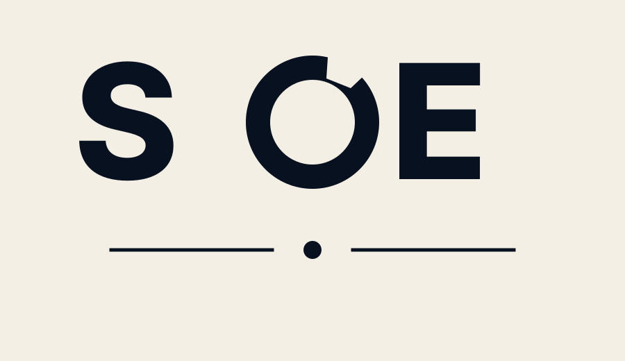
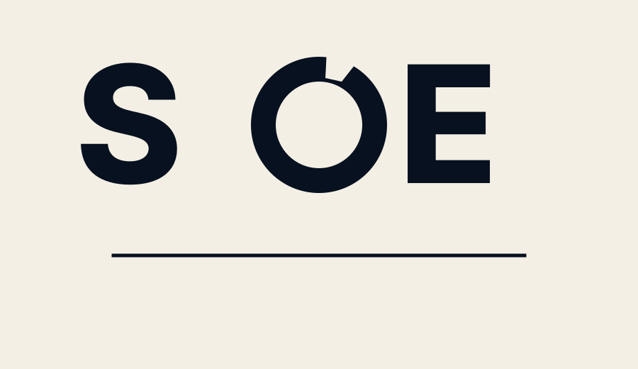

SOE Logo Final Comparison
Corrected wordmark tests after review: no four-cardinal-gap O, no side-gap C-read, improved spacing, and no-dot comparison.


Corrected wordmark tests after review: no four-cardinal-gap O, no side-gap C-read, improved spacing, and no-dot comparison.

